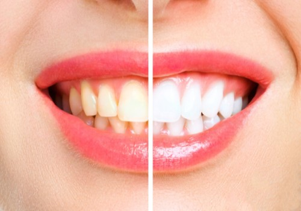
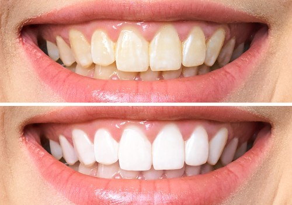

English
English
Diş Beyazlatma İstanbul
Atlantic Dental Kliniği-İstanbul
Diş beyazlatma - Bleaching - Fiyatları
Diş beyazlatma nedir?
Diş beyazlatma (Bleaching), çeşitli nedenlerle sararmış, lekelenmiş dişlerin beyazlatılarak doğal diş renginde ya da isteğe göre doğal diş renginden daha açık ve daha beyaz olacak şekilde beyazlatılması işlemidir. Bleaching işlemi dünya sağlık örgütü onaylı, yalnız diş hekimlerinin kullanabildiği diş beyazlatıcı jellerin; diş minesine, diş hekimleri tarafından klinik ortamında sürülmesi ile başlar. Ardından sürülen diş beyazlatici jel lazerle ısıtılarak aktifleştirilir. Lazerle diş beyazlatma denilen işlem uygulanır. Beyazlatıcı bazı jeller lazer uygulamasına gerek kalmadan da aktifleşir. Jel seçimini hekiminiz size uygun olacak şekilde yapacaktır. Birkaç set şeklinde işlem tekrarlanır ve son olarak jel temizlenir. Jel temizlendikten sonra diş beyazlatma işlemi tamamlanmış olur.
Bembeyaz dişler ile gülümsemek sizin de hayallerinizi süslüyorsa tek seansta ulaşabileceğiniz bu güzellik için bleaching işlemi yaptırmak üzere kliniğimize gelmenizi tavsiye ederiz.
Diş beyazlatma neden yapılır?
Zamanla, kullanılan ilaçların yan etkisiyle, ağız ve diş sağlığına yeterince özen gösterilmemesi nedeniyle, gıda tüketim alışkanlıkları sebebiyle diş minesinde (dişin en üst tabakasında) renk değişikliği olabilir. Bu sararma rahatsız edicidir. Diş estetiği için, daha temiz, sağlıklı ve güzel görünüm için bleaching (diş beyazlatma) tercih edilebilir.
Dişleri beyazlatmak tamamen kişinin kendi talebiyle uzman diş hekimi tarafından, klinik ortamında insan vücuduna yapılan estetik olarak en masum ve keyifli müdahale diyebiliriz.
Diş beyazlatma yöntemleri nelerdir?
Diş beyazlatma yöntemleri üç türdür:
Office bleaching, Home bleaching yani ev ve ofis tipi beyazlatma ve Internal Bleaching içten beyazlatmadır. Bu üç işlem ayrı ayrı uygulandığı gibi hastanın isteği ve diş hekiminin uygun görmesiyle beraber de uygulanabilir.
- Ev tipi beyazlatma (Home bleaching):
- Çay, kahve ve kola gibi dişte renk değişikliği yapabilecek içecekleri ve gıda boyası içeren yiyecekleri aşırı tüketmeyin,
- Sigara içmeyi bırakın,
- Her gün en az 2 kez 2 dakika dişlerinizi fırçalayın,
- Diş ipi kullanın,
- Düzenli diş hekimi kontrollerine gidin ve tedavi gerektiren dişlerinizi vakit kaybetmeden tedavi ettirin,
- Ofis Tipi Beyazlatma (Office Bleaching):
- İçten Beyazlatma (İnternal Bleaching):
Evde diş beyazlatma (Home bleaching )denildiğinde akıllara evde kendi kendine diş beyazlatma işlemi yapmak gelebilir. Home bleaching kendi başınıza alıp kullandığınız ürünlerle yapılmaz. Diş hekimleri bu tür beyazlatma ürünlerinin hekim tavsiyesi olmadan alınıp kullanılmasını onaylamıyor.
Evde diş beyazlatma işlemi için öncelikle diş hekiminizin bunu tavsiye etmesi gerekir. Daha sonra ise hekiminizin hazırladığı dişlerinizin üzerine gelecek olan şeffaf plak içine (sadece diş hekiminin önerisiyle kullanılması gereken) diş beyazlatıcı jel sürülerek evde uygulanan bir işlemdir. Evde diş beyazlatma işlemi için şeffaf diş plağı günlük 4-6 saat kullanılmalı ve tedaviye en az 15 gün devam edilmelidir.
Evde diş beyazlatma işlemini ilk tercih olarak görmeden, diş hekimlerimizin diş beyazlığını koruma tavsiyelerine dikkat edilmelidir. Aşağıdaki tavsiyelere uymakla beraber daha estetik gülüş ve daha beyaz dişler için kliniğimize gelip hekimlerimizin tavsiyelerini, uygun gördükleri tedavileri alabilirsiniz.
Dişlerinizdeki doğal beyazlığı korumak için:
Ayrıca, diş hekiminizin onayı olmadan kulaktan dolma veya internetten gördüğünüz herhangi bir diş beyazlatma tarifini kesinlikle uygulamayın. Piyasada satılan diş beyazlatıcı jeller, özel diş beyazlatıcı macunlar dişinize ve diş etinize hasar verebilir. Geri dönüşü olmayan bir kazaya sebebiyet vermemek için diş hekiminizin onayıyla işlem yapılması doğru olanıdır. Evde yapılması en uygun işlemler, rutin olarak yaptığımız ağız ve diş sağlığı bakımlarımızdır.
Diş beyazlatma işlemi için en doğru tercihtir. Bu bleaching yönteminde diş hekiminiz işlemi kliniğinde tek seansta 2-3 set şeklinde yapar. Diş rengi tek seansta birkaç ton açılır. Bleaching yıllardır kliniğimizde başarı ile uygulanan hasta memnuniyeti sağlanan bir işlemidir.
İnternal Bleaching işlemi daha önce kanal tedavisi yapılmış dişlerin içten dışa olacak şekilde beyazlatılması işlemidir. İlk olarak kanal tedavisi gören dişteki pulpa çıkarılır. Diş içine özel bir madde yerleştirilir. Bu madde dişteki farklı renklenmeleri çözer. Bu sayede diş beyazlar.
Diş beyazlatma öncesi ne yapılır?
Hasta diş hekimimize ön muayenesini olur. Ağız ve diş sağlığı için gerekli diş tedavileri varsa onlar yapılır. Bunlar:
- Diş eti iltihabı tedavisi veya diş eti sağlığınız ile ilgili tedavi ve işlem yapılır.
- Diş taşı temizlenir.
- Çürük, kırık dişleriniz varsa estetik dolgu yapılır.
- Derin çürükleriniz varsa Endodontik tedavi (kanal tedavisi) yapılır.
- Ortodontik (sorunlu çene yapısı, dişlerin çok sık ve üst üste olması) sorunlar ortadan kaldırılır.
- Diş sarılığınızın nedeninin genetik bir eksiklik olup olmadığına bakılır.
Diş hekiminiz ağız ve diş sağlığınız ile ilgilenerek beyazlatma işlemi için gerekli altyapı oluşturacaktır.
Bleaching nasıl yapılır? Diş beyazlatma nasıl yapılır?
- Beyazlatma öncesi gerek duyulan diş tedavileri yapılır.
- İşlem öncesi dişlerin fotoğrafı çekilir. Bu sayede bleaching işlemi gören dişler tam rengine 24 saat sonra ulaşacak olsa da hasta daha kinikten çıkmadan oluşan ilk renk farkını görür.
- Bireyin ağzına ayıraç konur.
- Diş etlerine koruyucu uygulanır.
- Yoğun kıvamlı diş beyazlatıcı jeller sürülür.
- Lazerle diş beyazlatma yapılır.
- Işın olmadan aktive olan jellerde mevcuttur. Hekiminiz bu jelleri de tercih edebilir.
- İşlem bir kaç set tekrarlanır.
- Diş yüzeyi temizlenir ve işlem tamamlanmış olur.
- Diş rengindeki ilk beyazlık ve işlem öncesi dişlerdeki beyazlık kıyaslanır. Hasta memnuniyeti daha bu aşamada başlamış olur.
İşlem yaklaşık 1 saat sürerken diş renginin tam tonunu alması 24 saati bulur.
Diş beyazlatma işleminden sonra nelere dikkat edilmeli?
Çeşitli nedenlerle beyazlığını yitirmiş dişlerin eski görüntüsüne kavuşması için uygulanan beyazlatma işleminden sonra dikkat edilmesi gereken hususlar:
- Beyazlatma işleminden sonra ilk 24-36 saat önemlidir. Hassasiyet oluşmaması için tükettiğimiz yiyeceklerin ve içeceklerin çok sıcak veya çok soğuk olmamasına dikkat edilmeli,
- Bir ortadan diğerine geçerken hava sıcaklığındaki farklılık da hassasiyet yapabilir. Bunu engellemek için maske kullanılmalı,
- Dişleri boyayacak gıdalardan uzak durulmalı (çay, kahve, sigara, kola, şarap vs.),
- Sigara gibi sağlığımızı derinden etkileyen zararlı maddelerin tüketimi tamamen bırakılmalı,
- Günlük rutinimizde olan ağız ve diş sağlığı bakımı ihmal edilmeden özenle yapılmalıdır.
Dişler neden sararır?
Dişlerdeki beyazlık çeşitli şekilde azalabilir. Bunlar:
- Çocukların büyüme ve gelişme döneminde ortaya çıkan yapısal bozukluk,
- Anne karnında iken kullanılan ilaçlar ya da bebekken kullanılan antibiyotikler,
- Günlük tükettiğimiz ürünlerdeki yanlışlıklar (Sigara vs.), aşırılıklar (çay, kahve…),
- Eski diş operasyonları,
- Diş çürümesi,
- İlerlemiş yaş,
- Doğru yapılmayan ağız ve diş bakımı,
- Uzun süre ilaç kullanımıdır.
Kimler bleaching işlemi yaptırabilir?
- Diş renginden görsel olarak rahatsız olanlar,
- Dişlerinin daha da güzel görünmesini isteyen bireyler,
- Çene gelişimini tamamlamış kişiler, (Genellikle 16 yaş üstü bireylerin çene kemiği gelişimi tamamlanmış olur. Ancak kişiden kişiye çene gelişimi farklılık gösterebilir. Bunun için diş hekiminizin yönlendirmesi en sağlıklısı olacaktır.)
İsteyen herkes diş beyazlatma işlemini kliniğimizden randevu alarak tecrübeli uzman diş hekimlerimize yaptırabilir.
Kimler diş beyazlatma yaptırmamalı?
- 15 yaş ve altı olanlar ile henüz çene gelişimi tamamlanmamış kesim bleaching yaptırmamalı,
- Hastanın ağız ve diş sağlığı uygun değilse ağız ve diş sağlığı tedavileri tamamlanmadan diş beyazlatma işlemi yaptırılmamalı,
- Ortodontik sorunları olanlar uzman diş hekiminin onayı olmadan diş beyazlatıcı işlem yaptırmamalı,
- Genetik yapı sebebiyle sarı olan dişlerde de yine diş beyazlatma işlemi yaptırılmamalıdır.
Genetik yapı nedeniyle bazı insanların süt dişleri döküldükten sonra gelen kalıcı dişlerde diş minesi oluşmamış olabilir. Bu dişlerde dişe parlaklık ve estetik veren diş minesi olmadığından dişler sarı gözükmektedir. Bu gibi durumlarda diş hekimlerinin önerisi lamine kaplama, zirkonyum kaplama, emax empress kaplama türlerinden birini yaptırılmasıdır. Genetik yapı sebebiyle sarı olan dişlere yapılacak işlemlerde de mutlaka hastanın yaşı ve çene gelişimi dikkate alınarak işlem yaptırılmalıdır.
Diş beyazlatma - Bleaching hakkında sıkça sorulan sorular
Diş beyazlatma fiyatları konusunu bleaching işleminin yapılacağı hastanın ağız ve diş sağlığı, diş beyazlatma işleminin başlatılabilmesi için yapılması gereken ön tedaviler, diş hekiminin tecrübesi, kliniğin bulunduğu lokasyon etkileyen faktörlerdir. Detaylı bilgi almak için kliniğimizden randevu almanızı ve hekimlerimize muayene olmanızı öneririz.
Diş beyazlatma işlemini, diş hekimleri klinikte ortalama 45-60 dakikada tamamlar. İşlemden 24-36 saat sonra diş renginiz son halini alır. Beyazlatma işleminin etki süresi ise kişinin diş yapısına ve tüketim alışkanlıklarına bağlı olarak değişiklik gösterir.
Dişlere iyi bakılması ve boyar madde olan yiyecek içeceklerin dikkatli tüketilmesi durumunda diş beyazlatma işleminin işlemin kalıcılığı ortalama 4 yıldır. Bu süre zarfında ağız ve diş sağlığı bakım rutinleri ihmal edilmediğinde işlemin etkisi çok daha uzun olacaktır.